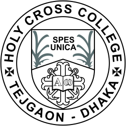
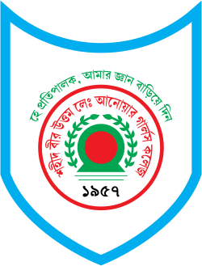
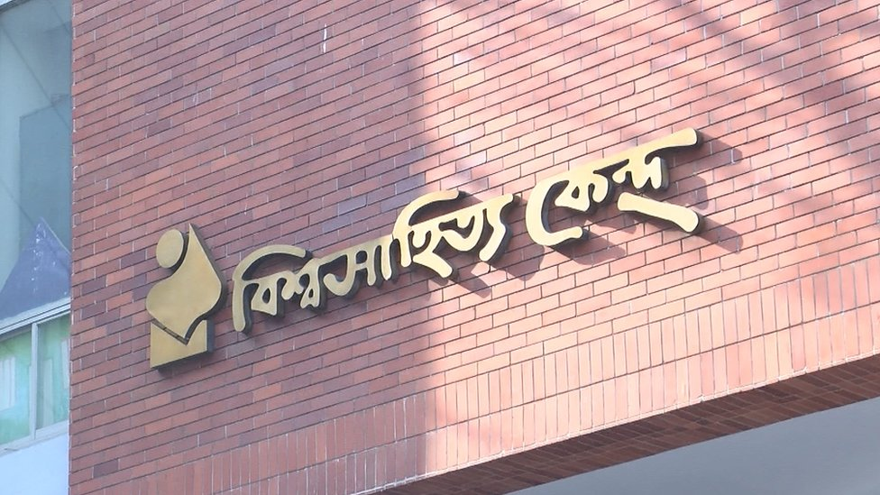

Co-curricular Activities
Club Activities
Joint Secretary (Finance and Logistics)
Successfully organized a webinar in observance of World Soil Day 2025, bringing together participants from Bangladesh, Nepal, and the Philippines to foster knowledge sharing and regional engagement. Contributed to the club’s governance and organizational development by assisting with constitution drafting and conducting policy reviews to strengthen institutional frameworks and operations.

Provisional Member
I had the experience of managing an event on "World Environment Day 2023" at
Nilkhet Govt. Primary School where we discussed about plastic pollution and quizzed students.
Volunteer
Volunteered the program organized by the Dhaka University Science
Society(DUSS) titled "Indegenous Research and Career in Research Festival-2022"

Science Festivals
17th HCC Inter College Science Festival 2019
Presented a project regarding municiple waste management which was presented under
non-mechanical category.

SAGC 4th Science Festival 2018-19
Presented a project regarding municiple waste management which was presented under
chemistry-project category.

Book Reading Contest
Won awards in three consecutive years at the book reading program organized by the Center for World Literature - a testament to a lifelong love of reading.

2015
বই পড়া কর্মসূচি (Book Reading Program)
বিশ্বসাহিত্য কেন্দ্র (Center for World Literature)
'শুভেচ্ছা পুরষ্কার (Commendation Award)'
বিশ্বসাহিত্য কেন্দ্র (Center for World Literature)
2014
বই পড়া কর্মসূচি (Book Reading Program)
বিশ্বসাহিত্য কেন্দ্র (Center for World Literature)
'শুভেচ্ছা পুরষ্কার (Commendation Award)'
বিশ্বসাহিত্য কেন্দ্র (Center for World Literature)
2013
বই পড়া কর্মসূচি (Book Reading Program)
বিশ্বসাহিত্য কেন্দ্র (Center for World Literature)
'শুভেচ্ছা পুরষ্কার (Commendation Award)'
বিশ্বসাহিত্য কেন্দ্র (Center for World Literature)